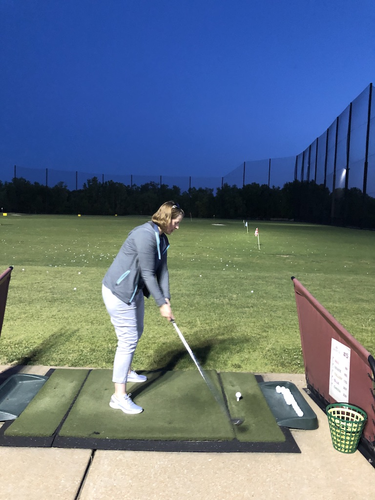
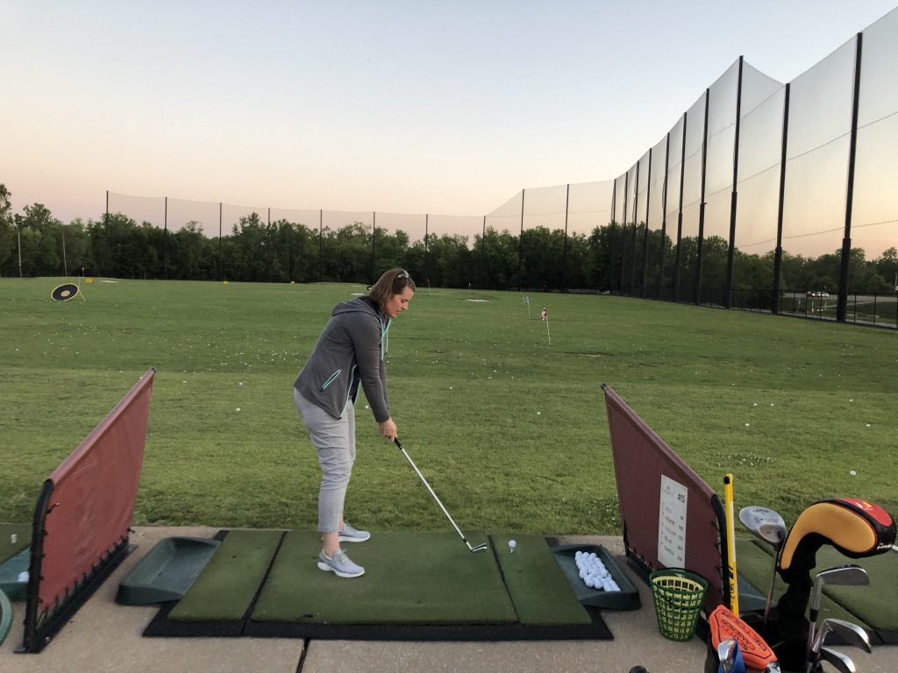
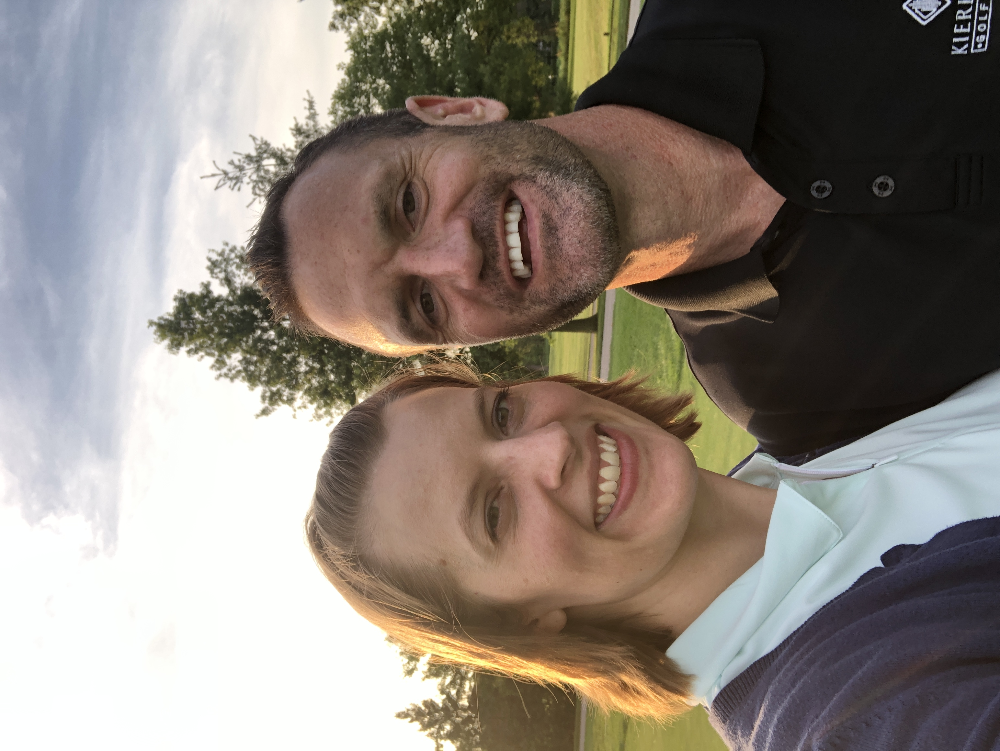

June 02, 2019
Plan on watching some of the Memorial today. What a treat it is to listen to Jack (Nicklaus) for an extended period of time on the broadcast.
June 07, 2019
Julie and I went to Forest Park G.C. tonight. We started off by putting. Without me mentioning it to Julie, she did her prayer routine to groove her putting stroke. After that, I helped her with her alignment, just by showing her where she was aimning. She immediatedly took to it. I wish I had her natural abilitly for alignment with her whole body. The improvement on her chipping was incredible! In total she has not hit a bucket yet and tonight she was doing well. I can't wait to go with her again. She is a fun, good and beaugtiful student!
June 09, 2019
This is a shout out to all those wondering what I meant by praying and Julie with her putting routine. Get into your natural putting stance without a club, and letting your arms hang down, put them togehter like you are prayin and rock your shoulders back and forth. Feel like you have a triange and that you are rocking it with your shoulders.
I am feeling a strong sense that I need to start this blog from the beginning with golf instruction for all of us to remember the basics.
June 10, 2019
I will write more tomorrow but Julie did great tonight at the range? Pics too...
June 11th
Here is a pic of Julie from us at the driving range.
 June 12th
Today is not a golf post. This is all about the Stanley Cup Champion STL Blues.

June 22nd
Julie and I went to Forest Park tonight to work on putting and chipping. She made quite a bit of improvement on both. I am super, uber, proud of her!.
July 10th, 2019
Epic trip
Hi everyone! We have been traveling throughout the greeat west for the last 12 or so days. We are in Sioux Falls, SD today and plan on getting to STL late tonight. I can't wait for my blanket 😀! Trip notes and pics to come shortly.
Breking News
When we get home, i will let you know the latest breaking news on our living situation...
July 16th, 2019
Family Golf Center
I had a blast last night hitting balls with my nephew, Kristopher and Dad.
I need to work on hip rotation to see if I can clear my hips before impact better.
July 17th, 2019
Packing
I worked on JavaScript functions today as well as get ready for the big move. Everythibng kind of seems overwhelming right now!
I do know that everything will work out just fine. Grateful for Len offering his help! He is THE expert packer!
July 19th, 2019
Julie and I are continuing to work while getting packed up for our big move to AZ.
July 31st, 2019
We are in AZ. Life has been super crazy with our 2 week trip and then less than 2 weeks to pack up and
leave. We are happy to be in Arizona now and look forward to our NEW future!


August 6th, 2019
Hi everyone! Things are going good here in AZ. We are much more settled in now. I am trying to decide if I want to get back into the golf industry or continue pursuing programming for a career. Both are my biggest passion in life so I can't go wrong with either one really.